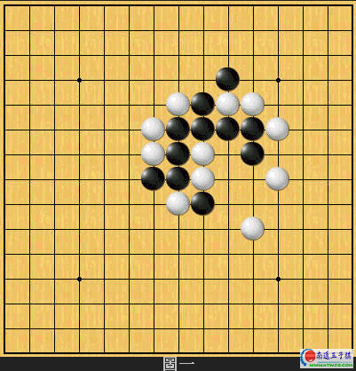
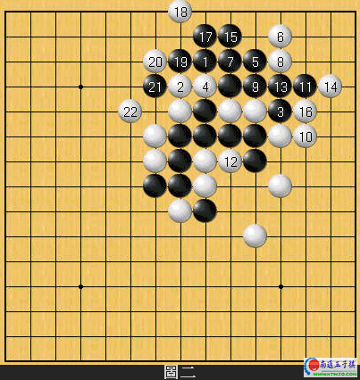
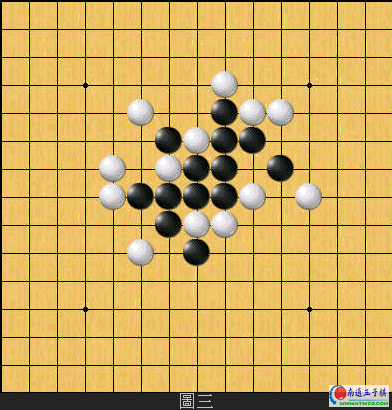
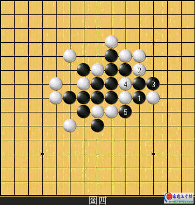
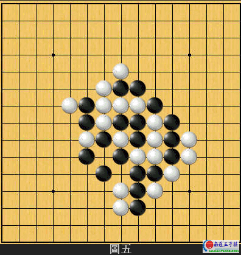
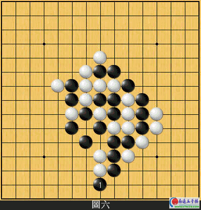
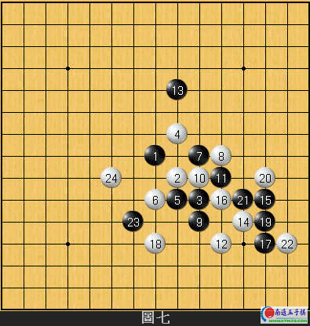
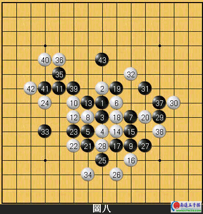

五子棋技巧閒言-攻击篇
#1 五子棋技巧閒言-攻击篇作者：有志青年 发表时间：2007-3-29 13:02:12
五子棋要想取胜,往往要透过一连串的进攻手段方能达到目的.这是所有五子棋爱好者都知道的道理,但知道不等於一定做得到.许多棋友们一定都想知道,怎样的攻击才能真正带给对手压力?以下的内容,是小弟综合了数年下棋的经验而得出的结论.也许裡面的观念不一定是完全正确的,但也许可以成為您在进攻时的一个思考方式.
进攻的要领,小弟将之区分成几个要项:1.锻鍊扎实的基本功; 2.攻击时应该要有的正确心态; 3.考量进攻的空间是否足够; 4.适当的保留进攻的资源; 5.善用问应手的技巧.以下将分段加以论述.
1.锻鍊扎实的基本功:想要得到另对手恐惧的进攻能力,首先要做的是基本功的锻鍊.锻鍊的方法便是多做题目.象棋初学者要达到入门的境界,只有勤加练习基本杀法的题目一途;围棋初学者要达到入门的境界,只有勤加练习基本死活和手筋的题目一途.所以五子棋自然也不例外.
基本杀力不足,在与人对弈的过程中,即使有简单胜的地方也很容易错过决胜时机.然而多做詰棋的题目则可以大幅度的降低这个机率.
或许有人会问,詰棋的题目要上哪裡才找得到?这个简单,家族酷连结[Sakata puzzles book]裡面有相当多的题目等著你去练习,内容大致上都是三手胜的题目.而这也是可以测试你目前实力的好机会.对於实力还是入门阶段的棋友来说,那些题目做起来肯定吃力.当一道题目五分鐘内目算不出答案的话,建议您可以先看解答没有关係.确实理解答案和解出答案的效果我相信是一样的.
有了最基本的杀棋能力之后,本篇之后的内容相信您看来会更加的得心应手!
2 攻击时应该要有的正确心态:我们在进攻的时候,应该要时时刻刻去注意到,对方是否有顽强抵抗的棋招.当您想下的攻击只有唯一防点时,必须在下那子之前先想想,对方下到唯一防的时候,形势是否依然对自己有利.许多人都有一种错误的心态,期待对手没看到唯一防点而取胜.从今天开始请彻底丢掉这种想法,这样你的棋力才会有进步的希望.
3.考量进攻的空间是否足够:在攻击的过程裡,还必须要去注意到空间足不足够的问题,空间不够则有再强的攻击都是没有用的!以下举出一个例子来加以说明:

看一下这个局面.黑在上方有许多进攻的资源,但很明显的空间不够.如果黑方硬要强行的话只会导致不良的后果:

如上图,黑23以下的攻击是完全没有意义的,徒然浪费资源.
4.适当的保留进攻的资源:许多棋友在攻击的过程当中,总喜欢活了个三之后马上把另一头的死四给衝掉,事实上这是一种很不好的一个习惯.适度的将可以进攻的资源保留下来,对棋局往往会有意想不到的功效.以下,举几个例子来给各位看看:

上图看得出来是云月定石的一型.之前已经通过詰棋考验的棋友相信可以轻鬆的判断出,黑方在此时无论怎麼活三衝四都不会赢的.那麼,黑应该怎麼下比较好呢?

这个黑1是很巧妙的一手,留下了J7和K10这两个死四活三点让白棋伤脑筋.白2是唯一同时能防住两个死四活三的好棋但接著黑3以下仍能简单取胜.所以,黑1以后黑就必胜了.再举一例:

这个局面黑应该如何下才是最有效的攻击呢?

正解是这个黑1,下面这个局部白方没有适切的防守.黑如果随随便便地去拉出那两个斜向死三的话则不能胜,请读者自行验证一下.
5.善用问应手的技巧:

看一下这个局面,黑13怎麼看都像是一步缓著.白从14手开始著手对黑展开攻势.白14并不是真的想直接从右边取胜,事实上白方真正的意图是想从左边比较大的空间来取胜的.但白14如果单在左方佈子的话则太过直接很容易被黑给防守住.所以,实战白14先在右边问一下黑方的应手,看看黑方会怎麼应,留下一点进攻的资源之后,慢慢的转到左边,白24再予以最后一击!
当然啦!黑方所下的防点或多或少是有问题的,但我的目的是要让读者了解,这种声东击西的下法,也是五子棋攻击战术裡相当有意思的其中一种.希望各位能将第五点反覆多看几次,直到彻底理解為止.
高手实战剖析:从世界一流高手的对局谱中,选出一个攻击成功的实战例子给各位看看.

本局是被称為[世纪之战]的第二局,黑方是世界冠军ANDO,白方是当时日本棋坛的第一高手中村茂九段.实战黑27以下在右边展开攻势,31手止我们可以很明显的看出,黑在右边的空间是不够的.所以,黑33突然转向左边是很机敏的下法,单靠左边黑当然也不能取胜.但黑棋适当的在左右留
#2 Re:五子棋技巧閒言-攻击篇作者：5子~学遥 发表时间：2007-8-30 9:20:52
恩!下的太妙了!#3 Re:五子棋技巧閒言-攻击篇作者：太子白 发表时间：2007-9-10 6:03:38
真是太精彩了#4 Re:五子棋技巧閒言-攻击篇作者：147258 发表时间：2008-3-10 11:31:54
唉~~~~~~~计算力还有待提高#5 Re:五子棋技巧閒言-攻击篇作者：jqjs 发表时间：2008-3-10 12:41:50
43真的是一个妙手
#6 Re:五子棋技巧閒言-攻击篇作者：汪洋孤舟 发表时间：2008-4-24 0:34:36
我先去做练习吧！
#7 Re:五子棋技巧閒言-攻击篇作者：汪洋孤舟 发表时间：2008-4-24 0:37:43
那个题目在哪儿啊，没找到！#8 Re:五子棋技巧閒言-攻击篇作者：菜巫妖 发表时间：2008-4-24 12:50:09
这几个例子够难的，学习中#9 Re:五子棋技巧閒言-攻击篇作者：敢脱天下先 发表时间：2008-4-25 9:01:48
厉害。
井底之蛙如我今得大见识。。谢谢楼主分享。。
#10 Re:五子棋技巧閒言-攻击篇作者：紫川然 发表时间：2008-7-8 14:42:04
强悍的43,.....无限向往....#11 Re:五子棋技巧閒言-攻击篇作者：五子冰 发表时间：2008-7-8 20:33:00
这可是世界冠军啊.
菜鸟的我看了都头晕啊.
#12 Re:五子棋技巧閒言-攻击篇作者：来客沙丝 发表时间：2009-3-16 21:15:46
晕的，最后的结局还是没能看懂。以后再回头来看了。